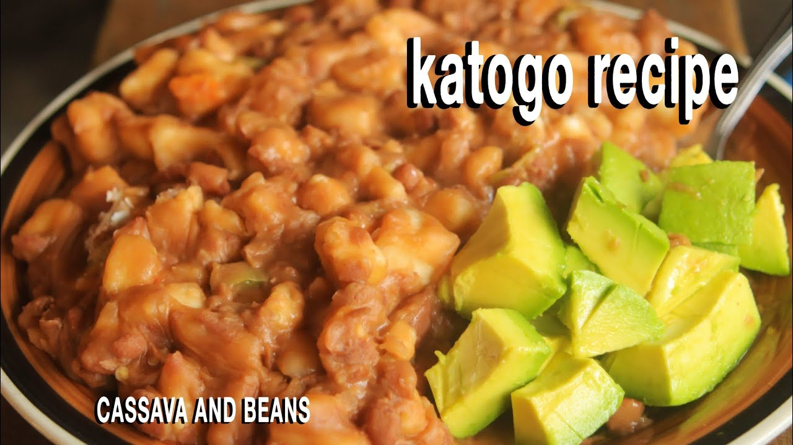

Katogo Recipe! Your Breakfast masterpiece

About the Recipe
With choped cassava mixed with beans, the taste is absolutely great
Katogo is consumed by many Ugandans espacially during morning hours.
Though it can be modified in diffrent ways,the
original "cassava and beans" remain the most liked all over Uganda
Ingredients
- Cassava
- Beans
- Tomatoes
- Salt
- Cooking oil
- Onions
- plus other spices of ur choice........
- Cook the beans for 1 hour
- Chop Onions and Tomatoes
- Fry th beans with Onions and Tomatoes, cooking oil plus other spices of your choice
- Leave th beans to boil for some time
- Peel and chop cassava into small pieces,
- Mix Cassava and beans then cook for 1hour.
Fact is Katogo is delicious